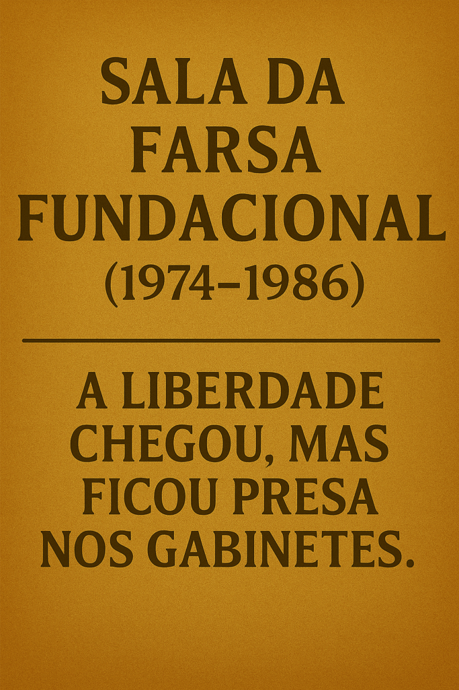
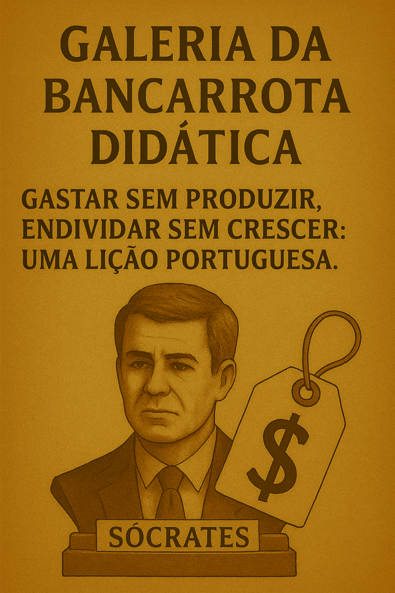
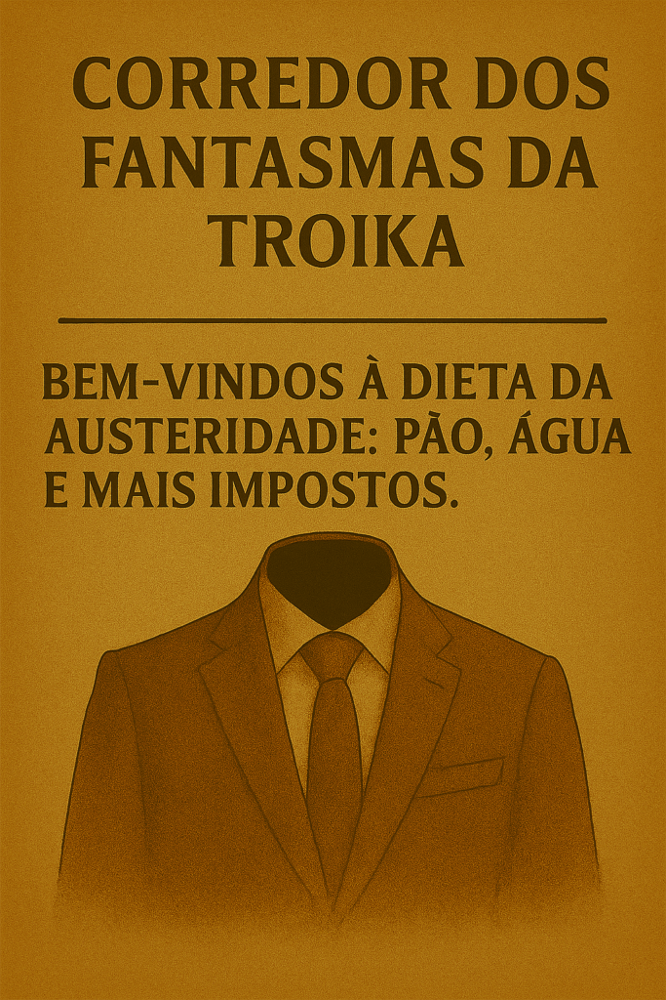
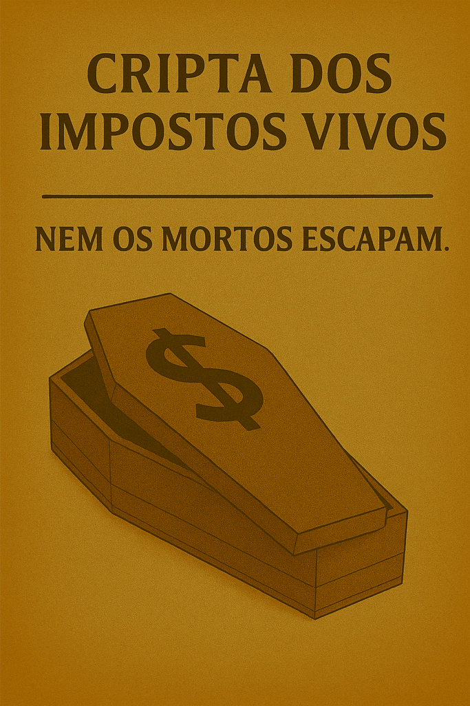

Portugal 50 anos : O Museu dos Enganos e Golpes de Estado
Publicado em 2025-05-22 12:32:37
Entrada gratuita. A saída, essa, custa-te uma vida inteira de impostos.
1. Sala da Farsa Fundacional (1974–1986)
“A Liberdade chegou, mas ficou presa nos gabinetes.”
Aqui temos:
As promessas do 25 de Abril embalsamadas ao lado dos sonhos de uma democracia participativa — todos esquecidos nos escombros da Constituição.
O painel da Partidocracia em Ascensão: mostra como rapidamente o poder passou dos generais para os aparelhos partidários, e como o povo voltou ao silêncio… desta vez em “liberdade”.
Um telefone vermelho onde os partidos combinaram os tachos antes do voto popular. Ao lado, uma urna de acrílico com fundo falso.

2. Galeria da Bancarrota Didática
“Gastar sem produzir, endividar sem crescer: uma lição portuguesa.”
Exposto:
Um busto dourado de José Sócrates com olhos de vidro e bolso duplo — um para o défice, outro para os contratos públicos.
Um “PECómetro” (medidor de Planos de Estabilidade e Crescimento), estalado por uso excessivo.
Um diploma da Independente emoldurado, com selo de Paris e assinatura da mãe.
Uma gravação do FMI dizendo: “Voltaremos.”

3. Corredor dos Fantasmas da Troika
“Bem-vindos à dieta da austeridade: pão, água e mais impostos.”
Inclui:
O terno invisível de Passos Coelho: parecia forte, mas era só retórica.
Um retrato falante de Vítor Gaspar que repete "rigor" em 27 línguas — sem explicar para onde foi o dinheiro.
Um mapa com as rotas de fuga da juventude portuguesa — mais eficiente que a TAP.
Um recibo de luz de 2023, considerado arte contemporânea pela OCDE.

4. Salão dos Compadrios Eternos
“Mérito é uma superstição. Aqui, só entra quem já entrou.”
Peças-chave:
Um tabuleiro de xadrez com as peças todas iguais: todas “boys”.
O "Elevador de Cargos": sobe-se por amizade, desce-se por denúncia.
A lista de empresas públicas falidas… mas com prémios de gestão.
5. Cripta dos Impostos Vivos
“Nem os mortos escapam.”
A Calculadora Maldita do Orçamento de Estado, que tira sempre mais do que soma.
O IRShow — um holograma do IVA a dançar em cada produto, com promoções fiscais só para os milionários.
A Urna Contributiva: onde depositas 40 anos de descontos e recebes... um vale.

Saída pela loja da indignação passiva.
Ali vendem-se t-shirts com frases como: “Se votar mudasse alguma coisa, já tinha sido proibido.” “Rouba um banco e vais preso. Governa um banco e vais à televisão.”